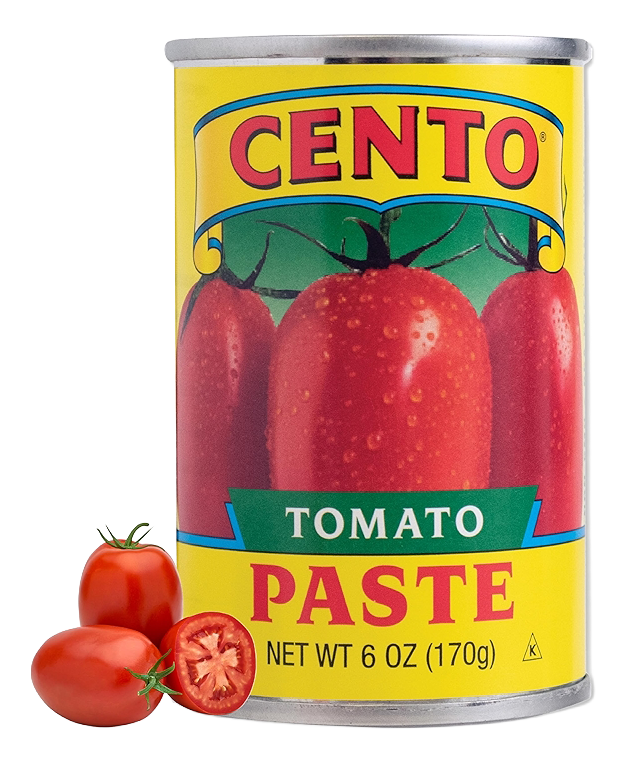
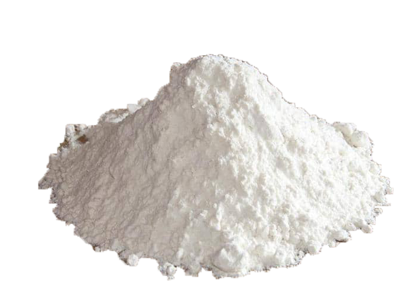
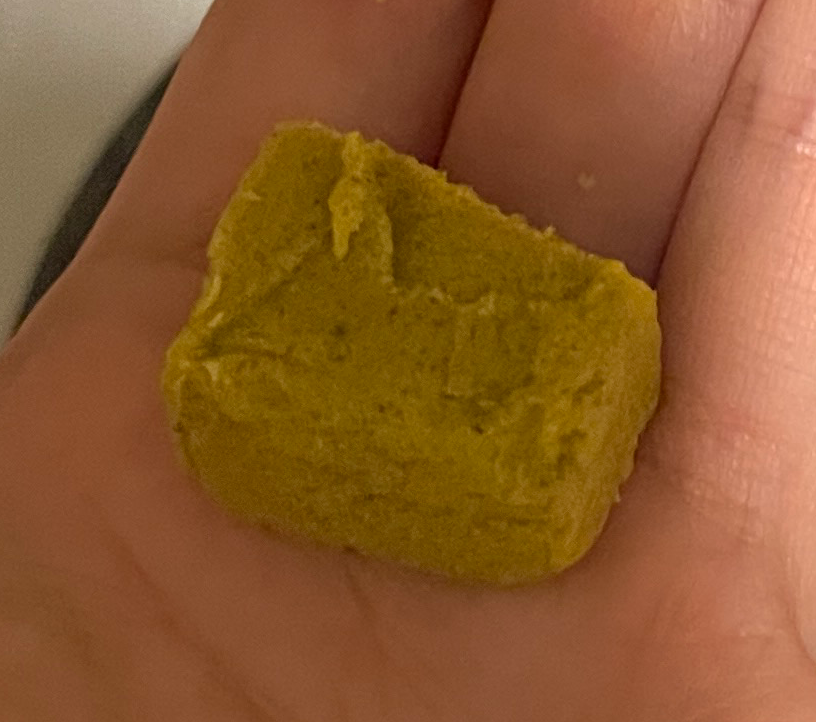
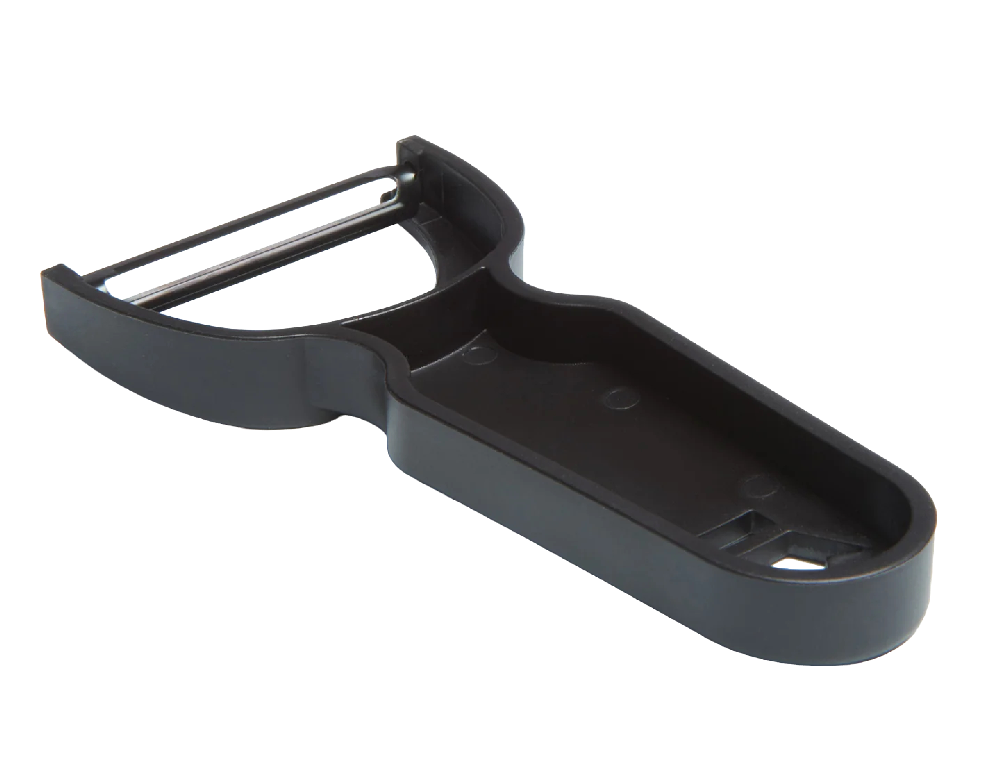
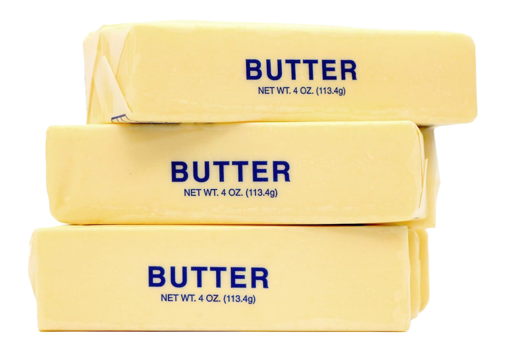
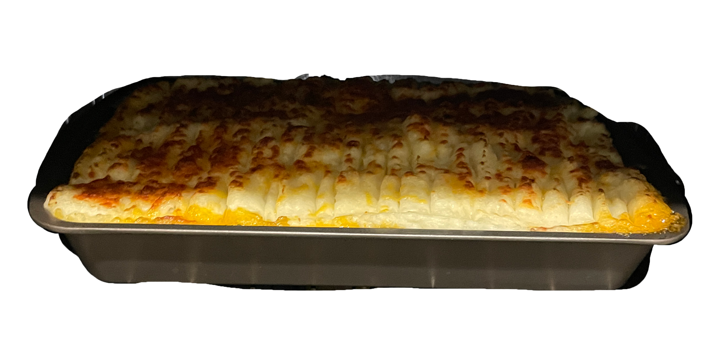

Cottage Pie
-ish
A cozy British comfort food. You cook up some ground beef with veggies, spread mashed potatoes on top, and throw it in the oven. The top gets a little crispy and golden, and when you scoop into it, you get the meat and potatoes all in one bite. Oh, and if you use lamb instead of beef, it's called shepherd's pie.

Ground Beef

Throw the ground beef in the pan and cook it until it's nicely browned

Mirepoix

Once the beef is browned, add in your diced onion, carrot, and celery

Tomato Paste

Add some tomato paste and mix it in

Flour

Toss in some flour and stir. This absorbs the juices so your filling stays thick, not watery

Chicken Broth

This is where the chicken stock comes in. Just gives it that extra depth

Transfer everything into a deep pan and spread it out. We're not done yet

Potatoes

Peeler

Peel the potatoes. Watch your fingers

Masher

Mash the potatoes with a masher

Garlic Powder

Add some garlic powder for extra flavor. Better than nothing, right?

Butter

Cream

Add cream and butter to make it smooth.

Mix it all together. No chunks of butter left behind.

The recipe didn't call for cheese, but I'm adding it anyway. My food, my rules.

I don't know why, but I made some patterns on top.

Bake until the cheese melts and turns golden brown. Exact temp? No clue.

Look At That